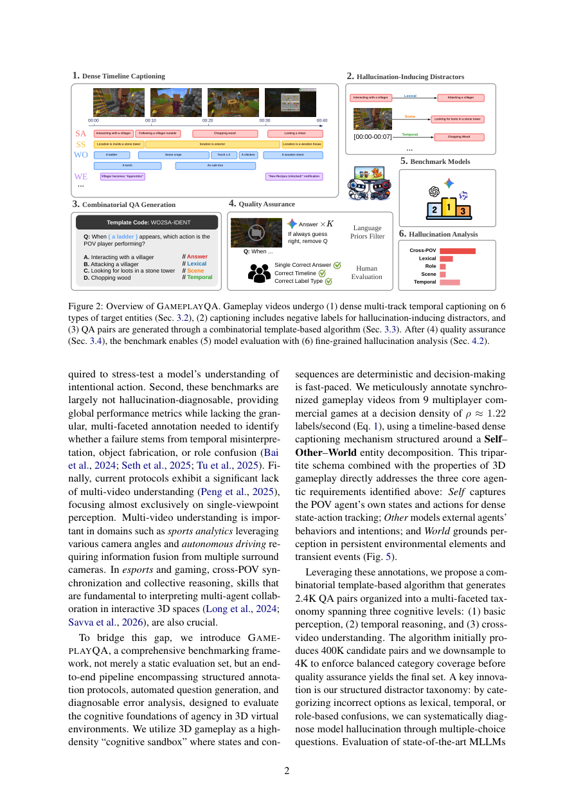

#1
★ 7/10
GameplayQA: A Benchmarking Framework for Decision-Dense POV-Synced Multi-Video Understanding of 3D Virtual Agents
GameplayQA：面向3D虚拟智能体决策密集型POV同步多视频理解的基准框架

图 Figure · Page 2 of paper
🎯 首个评估多智能体3D游戏第一视角视频理解能力的基准框架
A new benchmark exposing major gaps in MLLMs' ability to understand multi-agent 3D gameplay from a first-person perspective.
| 维度 | 中文 | English |
|---|---|---|
| ❓ 待解决 的问题 |
多模态大语言模型越来越多地被用作3D环境中自主智能体的感知引擎，但现有基准无法测试关键能力，例如追踪快速状态变化、将动作归因到正确的智能体、或从第一人称视角推理并发的多智能体行为。现有评估工具的缺失让我们无法有效衡量并修复当前模型的感知盲区。 | Multimodal LLMs are increasingly used as perception engines for autonomous agents in 3D environments, but existing benchmarks don't test critical skills like tracking rapid state changes, attributing actions to the right agent, or reasoning about simultaneous multi-agent behaviors from a first-person view. Without rigorous evaluation tools, we can't measure or fix these blind spots in current models. This is especially important as AI agents are deployed in complex environments like games, robotics, and virtual simulations. |
| 💡 解决 的亮点 |
• **三元标注体系**：将标注组织为"自身（Self）、其他智能体（Other Agents）、世界（World）"三类，贴合多智能体环境的自然结构。\n• **高密度决策标注**：以每秒1.22个标签的密度捕捉多人3D游戏中快速、并发的事件。\n• **结构化干扰项分类体系**：精心设计的错误选项可精准暴露模型的具体失败模式（如智能体角色归因错误、时序定位幻觉等）。\n• **三级认知复杂度**：2400个QA对按推理难度分为三个层次，从基础感知到跨视频多智能体复杂推理。 | • **Triadic annotation system**: Videos are annotated around three entity types — Self, Other Agents, and the World — mirroring how multi-agent environments are naturally structured.\n• **Decision-dense labeling**: Achieves a high annotation density of 1.22 labels/second, capturing the rapid, concurrent events in multiplayer 3D gameplay.\n• **Structured distractor taxonomy**: QA distractors are carefully designed to expose specific failure modes (e.g., hallucination about agent roles, temporal grounding errors), enabling fine-grained model diagnosis.\n• **Cognitive complexity tiers**: 2,400 QA pairs are organized into three levels of reasoning difficulty, from basic perception to complex cross-video multi-agent reasoning. |
| 🧪 实验 内容 |
实验在GameplayQA基准上评估了多个前沿多模态大语言模型（MLLMs），包括GPT-4o等主流模型。评估任务涵盖三个认知复杂度级别的多项选择QA，涉及第一人称视角的时序理解、跨视频多智能体行为推理、以及智能体角色归因。人类表现作为参照上界，模型的错误类型通过结构化干扰项分类体系进行细粒度分析。 | Frontier MLLMs (including GPT-4o-class models) were evaluated on the 2,400 QA pairs in GameplayQA across three cognitive complexity levels. Tasks include multiple-choice questions requiring temporal video grounding, cross-video multi-agent reasoning, and agent-role attribution from first-person 3D gameplay footage. Human performance was established as an upper-bound reference, and model errors were analyzed using the structured distractor taxonomy to identify specific failure categories. |
| 📊 实验 结果 |
前沿多模态大语言模型在GameplayQA三个认知复杂度级别上均与人类表现存在显著差距。模型在时序定位、跨视频推理、智能体角色归因以及处理游戏高决策密度方面频繁出错。摘要未披露具体准确率数字，但结果表明当前最先进MLLMs在智能体第一视角多视频任务上表现远逊于人类，揭示了明显的能力天花板。 | Frontier MLLMs show a substantial gap compared to human performance across all three cognitive complexity levels on GameplayQA. Models frequently fail at temporal and cross-video grounding, agent-role attribution, and handling the high decision density of gameplay. While exact model accuracy numbers are not fully detailed in the abstract, the benchmark reveals that current state-of-the-art MLLMs struggle significantly on agentic first-person multi-video tasks, with human performance representing a considerably higher ceiling than any evaluated model achieves. |
| 🏁 结论 | GameplayQA建立了一个严格且诊断能力丰富的基准，揭示了前沿多模态大语言模型在3D多智能体环境中的智能体感知能力与人类水平之间的显著差距，为具身AI、时序推理和世界建模领域的进步提供了结构化评估工具。 | GameplayQA establishes a rigorous, diagnostically rich benchmark revealing that frontier MLLMs fall significantly short of human-level agentic perception in 3D multi-agent environments. The framework provides the community with structured tools to measure and drive progress in embodied AI, temporal reasoning, and world modeling. |
| 🔗 论文 链接 |
arXiv: 2603.24329v1 · 📥 PDF | |
⚙️ Method · 方法详解
作者录制了多人3D游戏（第一人称视角）并以每秒1.22个标签的密度进行时间同步的密集标注。标注采用"自身/其他智能体/世界"三元结构。基于这些标注，构建了2400个诊断性QA对，分为三个认知复杂度层次。设计了结构化干扰项分类体系，使错误选项与已知失败模式一一对应，从而实现对模型错误的精准溯源。最终用前沿多模态大语言模型在该基准上进行评估，并与人类表现进行对比。
The authors built GameplayQA by recording multiplayer 3D gameplay (first-person perspective) and densely annotating videos with time-synced captions at 1.22 labels/second. Annotations follow a triadic structure covering the agent itself, other agents, and world events. From these rich annotations, 2,400 diagnostic QA pairs were constructed across three cognitive complexity levels. A structured distractor taxonomy was designed so that wrong answer choices correspond to specific, known failure modes, allowing precise analysis of where and how models go wrong. Finally, frontier multimodal LLMs were evaluated on this benchmark and compared against human performance.
📐 Key Formulas · 关键公式
\[\text{Annotation Density} = 1.22 \text{ labels/second}\]
💡 视频标注密度：每秒平均产生1.22个标注标签，反映了对游戏快速事件的高频覆盖能力。
The annotation density of the benchmark: 1.22 labels are assigned per second of video, capturing the rapid, decision-dense nature of 3D multiplayer gameplay.
🌟 Why It Matters · 为什么重要
随着AI智能体被部署到机器人、虚拟世界等越来越复杂的3D环境中，第一视角多智能体感知成为亟待突破的核心能力。GameplayQA为研究社区提供了一个原则性、细粒度的诊断工具，能精准定位当前MLLMs的失败点，有力推动具身智能和智能体感知的定向改进。
As AI agents are deployed in increasingly complex 3D environments — from robotics to autonomous virtual agents — robust first-person, multi-agent perception is a critical unsolved capability. GameplayQA provides the research community with a principled, fine-grained diagnostic tool to measure exactly where current MLLMs fail, accelerating targeted improvements in embodied and agentic AI.